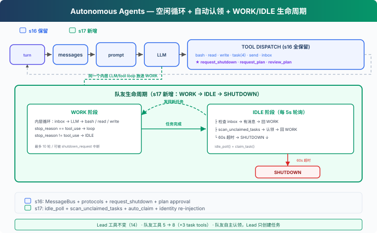

s17: Autonomous Agents — 自己看板，自己认领
"自己看板，自己认领" — 空闲时轮询，有活就干。 Harness 层: 自治 — 队友自组织，不依赖 Lead 分配。
On this page
s01 → ... → s15 → s16 → s17 → s18 → s19 → s20
"自己看板，自己认领" — 空闲时轮询，有活就干。
Harness 层: 自治 — 队友自组织，不依赖 Lead 分配。
问题
s16 的队友能通信、能握手关机。但每个队友等 Lead 分配任务——如果任务看板上有 10 个未认领任务，Lead 得手动 assign 10 次。这不能扩展。队友应该自己看任务看板，发现没人做的任务就认领，做完再找下一个。
解决方案

沿用 S16 的教学版 MessageBus 和协议工具。本章新增：idle_poll（空闲时每 5 秒轮询一次）、scan_unclaimed_tasks（扫描看板上可认领的任务）、自动认领（找到任务就 claim，不用 Lead 操心）。
队友生命周期从两阶段变成三阶段：
| 阶段 | 行为 | 退出条件 |
|---|---|---|
| WORK | inbox → LLM → 工具循环 | stop_reason != tool_use |
| IDLE | 每 5s 轮询 inbox + 任务板 | 60s 超时 |
| SHUTDOWN | 发 summary，退出 | — |
工作原理
idle_poll: 空闲轮询
队友完成当前任务后不退出，进入 IDLE 阶段——每 5 秒检查一次有没有新工作：
IDLE_POLL_INTERVAL = 5 # seconds
IDLE_TIMEOUT = 60 # seconds
def idle_poll(agent_name, messages, name, role) -> str:
"""Return 'work', 'shutdown', or 'timeout'."""
for _ in range(IDLE_TIMEOUT // IDLE_POLL_INTERVAL):
time.sleep(IDLE_POLL_INTERVAL)
# ① 检查收件箱（优先）
inbox = BUS.read_inbox(agent_name)
if inbox:
# shutdown_request 立即处理
for msg in inbox:
if msg.get("type") == "shutdown_request":
# ... 回复 shutdown_response
return "shutdown"
# 普通消息注入上下文，回到 WORK
messages.append(...)
return "work"
# ② 扫描任务看板
unclaimed = scan_unclaimed_tasks()
if unclaimed:
task = unclaimed[0]
result = claim_task(task["id"], agent_name)
if "Claimed" in result:
messages.append(...)
return "work"
return "timeout"
inbox 优先（可能包含 shutdown_request 等协议消息），任务板其次。IDLE 阶段收到 shutdown_request 会直接回复并退出，不等到下一轮 WORK。
scan_unclaimed_tasks: 扫描任务看板
找 pending 状态、无 owner、所有依赖已完成（can_start）的任务：
def scan_unclaimed_tasks() -> list[dict]:
unclaimed = []
for f in sorted(TASKS_DIR.glob("task_*.json")):
task = json.loads(f.read_text())
if (task.get("status") == "pending"
and not task.get("owner")
and can_start(task["id"])):
unclaimed.append(task)
return unclaimed
三个条件：必须是 pending、没有 owner、所有 blockedBy 依赖已完成。can_start 检查依赖任务的状态——有依赖不代表不能做，只有被未完成的任务阻塞才不能做。教学版按文件名排序取第一个；CC 用文件锁防止多个队友同时认领同一个任务。
claim_task: owner 检查
自动认领时检查 claim 结果，不把失败当成功：
def claim_task(task_id: str, owner: str = "agent") -> str:
task = load_task(task_id)
if task.status != "pending":
return f"Task {task_id} is {task.status}, cannot claim"
if task.owner:
return f"Task {task_id} already owned by {task.owner}"
if not can_start(task_id):
return f"Blocked by: {deps}"
task.owner = owner
task.status = "in_progress"
save_task(task)
return f"Claimed {task.id} ({task.subject})"
教学版没有文件锁，并发认领可能出现竞争。但至少 task.owner 检查避免了最明显的"后写覆盖"问题。CC 用 proper-lockfile 保护任务文件，claimTask 在文件锁内完成读-改-写（utils/tasks.ts:541-612）。
队友生命周期: WORK → IDLE → SHUTDOWN
s16 的队友做完任务就退出。s17 加了 IDLE 阶段，队友在外层循环中反复 WORK → IDLE：
# Outer loop: WORK → IDLE cycle
while True:
# WORK phase: 内层循环（最多 10 轮 LLM 调用）
for _ in range(10):
# 检查 inbox、处理协议消息、调 LLM、执行工具
...
if response.stop_reason != "tool_use":
break # WORK 阶段结束
# IDLE phase
idle_result = idle_poll(name, messages, name, role)
if idle_result == "shutdown":
break
if idle_result == "timeout":
break # 60s 超时 → SHUTDOWN
# SHUTDOWN: 发 summary 给 Lead
BUS.send(name, "lead", summary, "result")
关键设计：
- 外层 while True：WORK 和 IDLE 交替进行，直到超时或收到关机请求
- 内层 for 10：WORK 阶段最多 10 轮 LLM 调用（防止无限循环）
- IDLE 超时 60 秒：12 次轮询 × 5 秒 = 60 秒。超时后发送 summary 并退出
- shutdown_request 两阶段都能响应：WORK 阶段通过 handle_inbox_message 分发；IDLE 阶段 idle_poll 直接检查并回复
身份重注入
autoCompact（s08）之后，队友的 messages 列表可能被压缩成一段摘要。每次进入新的 WORK 阶段时检查：
if len(messages) <= 3:
messages.insert(0, {"role": "user",
"content": f"<identity>You are '{name}', role: {role}. "
f"Continue your work.</identity>"})
消息过短说明发生了压缩，此时重新注入身份信息。真实 CC 中 context compaction 会保留 system prompt，教学版的简化实现需要手动处理。
consume_lead_inbox: 统一 inbox 消费
check_inbox 工具和主循环末尾都调用同一个 consume_lead_inbox() 函数：先路由协议 response 更新状态，再把所有消息注入 Lead 的对话历史。队友发来的 summary/result 不会只打印在终端，Lead 的 LLM 能看到并协调下一步。
合起来跑
1. Lead: "搭建后端——任务太多，让队友自己认领"
2. Lead → create_task("创建数据库 schema")
3. Lead → create_task("写 API 路由")
4. Lead → create_task("写单元测试")
5. Lead → spawn_teammate("alice", "backend", "你是后端开发者")
6. Lead → spawn_teammate("bob", "backend", "你是后端开发者")
7. alice 线程启动 → WORK: 没有初始 inbox → 空转 → IDLE
8. bob 线程启动 → WORK: 没有初始 inbox → 空转 → IDLE
9. alice IDLE 第 1 次轮询 → scan_unclaimed → 发现"创建数据库 schema"
10. alice → claim_task → "创建数据库 schema" → 回到 WORK
11. bob IDLE 第 1 次轮询 → scan_unclaimed → 发现"写 API 路由"
12. bob → claim_task → "写 API 路由" → 回到 WORK
13. alice WORK: write_file("schema.sql", ...) → complete_task → WORK 结束
14. alice IDLE → scan → "写单元测试" → claim → WORK
15. alice WORK: write_file("test_api.py", ...) → complete_task → WORK 结束
16. alice IDLE → 60s 无新任务 → SHUTDOWN
17. bob 类似流程 → 做完 → SHUTDOWN
18. Lead consume_lead_inbox → 看到 alice 和 bob 的 summary
两个队友并行认领、并行工作。Lead 只需要创建任务和启动队友，不需要手动分配。
相对 s16 的变更
| 组件 | 之前 (s16) | 之后 (s17) |
|---|---|---|
| 任务分配 | Lead 手动 assign | 队友自动认领（can_start 检查依赖） |
| 队友状态 | WORK 或退出 | WORK → IDLE（轮询 60s） → SHUTDOWN |
| claim_task | 无 owner 检查 | 拒绝已有 owner 的任务 |
| IDLE 阶段关机 | 不处理 shutdown_request | 直接 dispatch shutdown 并退出 |
| Lead inbox | 只打印，不进上下文 | consume_lead_inbox 统一注入 history |
| 新函数 | — | idle_poll, scan_unclaimed_tasks, consume_lead_inbox |
| 身份保持 | 仅 system prompt | 压缩后自动重注入 |
| Lead 工具 | 14 (s16) | 14（不变） |
| 队友工具 | 5 | 8（+ list_tasks, claim_task, complete_task） |
| 队友退出条件 | 完成任务即退出 | 60s 无新任务才退出 |
试一下
cd learn-claude-code
python s17_autonomous_agents/code.py
试试这个 prompt：
Create 3 tasks on the board, then spawn alice and bob. Watch them auto-claim and work.
观察重点：队友是否自动认领了未分配的任务？有 blockedBy 依赖的任务是否在前置完成后被正确认领？空闲超时后是否自动关机？IDLE 阶段收到 shutdown_request 是否立即响应？.tasks/ 目录下的任务状态如何变化？
接下来
队友自组织了。但 Alice 和 Bob 都在同一个目录下工作——Alice 改 config.py，Bob 也改 config.py，互相覆盖。
s18 Worktree Isolation → 每个任务有自己的工作目录，互不干扰。